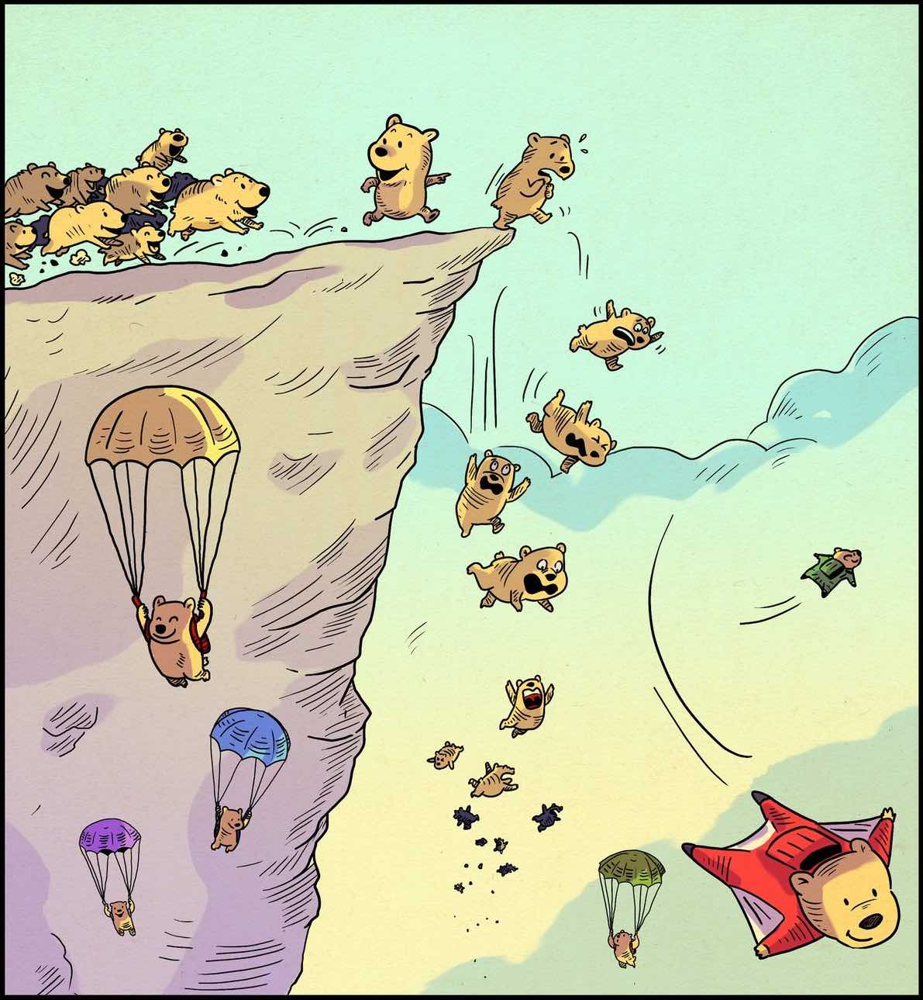
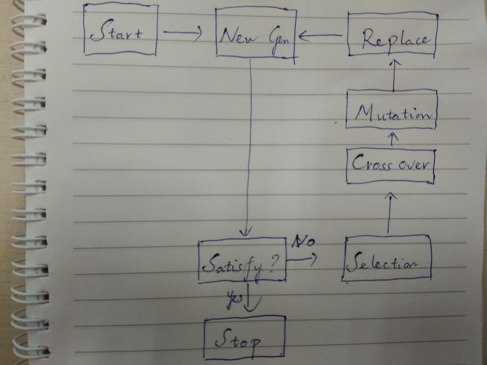

Lưu ý: mình viết bài với góc nhìn của 1 người tìm hiểu về GA được khoảng 3 ngày, để làm 1 small project (là project này), vì vậy mình nghĩ có nhiều điều mình viết ra có thể bị thiếu sót. Các bạn nếu muốn thực sự tìm hiểu sâu về GA hãy đọc phần các nguồn tham khảo phía dưới.
Giới thiệu
Tự nhiên là 1 bậc thầy kỳ diệu với những thiết kế mà con người vẫn chưa thể hiểu và nắm bắt được. Rất nhiều thuật toán trong AI được truyền cảm hứng từ sinh học, và Genetic Algorithms (từ giờ mình sẽ viết tắt là GA) là 1 trong số đó. GA là 1 Metaheuristic thuộc nhánh evolutionary algorithms (EA).

Phát triển hoặc bị đào thải
Ý tưởng chính của GA dựa theo cơ sở tiến hoá mà chúng ta thường biết: các quần thể là thể hiện ra từ các cá thể (là thể hiện bên ngoài của chromosome) sinh sôi (crossover) và có đột biến (mutation) theo thời gian. Trải qua các thế hệ, các cá thể không phù hợp sẽ bị đào thải, giữ lại những cá thể phù hợp nhất với tiêu chuẩn (fitness) của chúng ta. Quần thể sẽ giảm mức đột biến hoặc không thay đổi nữa nếu cảm thấy đã hoàn toàn phù hợp với môi trường. Các phép biến đổi chính của GA mang cảm hứng từ việc chọn lọc tự nhiên như: mutation, crossover, selection. Về cơ bản, có thể xem GA như 1 thuật toán optimization, và bạn có thể liên tưởng tới các thuật toán optimization khác như Gradient Descent (GD), Stochastic Gradient Descent (SGD),…
Mô tả thuật toán

Flow của GA
Genetic Algorithms bao gồm các bước sau:
- Bước 1 (New Gen): tạo ra 1 generation có chứa n chromosome.
- Bước 2 (Satisfy): đánh giá generation này, nếu generation thoả mãn yêu cầu thì dừng lại, nếu chưa thoả mãn, chúng ta sẽ đi tới bước 3.
- Bước 3 (Selection): lựa chọn các chromosome tốt để tiến hành ghép cặp tạo ra thế hệ sau.
- Bước 4 (Crossover): tạo ra các chromosome mới cho thế hệ tiếp
- Bước 5 (Mutation): xem xét tạo ra đột biến (hoặc không) cho các chromosome ở bước 4.
- Bước 6 (Replace): đặt các chromosome vào thế hệ kế tiếp, lặp lại từ bước 3 tới bước 6 cho tới khi đạt tới Population size (tức là quay lại bước 1)
Thực hiện quy trình này cho tới khi thỏa mãn yêu câu của chúng ta.
Về cơ bản, outline của GA rất đơn giản và dễ hiểu. Tuy nhiên, sự đơn giản này dẫn tới việc không có 1 công thức tường mình trong quá trình implement. Các bạn sẽ phải giải quyết những câu hỏi như:
- chúng ta cần tìm 1 thể hiện, 1 biểu diễn cho chromosome. Chúng ta cần encode nó thế nào?
- tiêu chuẩn lựa chọn các cặp cha mẹ là gì?
- cách chúng ta crossover ra chromosome mới như thế nào?
- cách chúng ta mutation như thế nào? …
Mình sẽ chỉ ra cụ thể cách áp dụng GA trong bài toán này vào part 4 của series, vì thế trong bài này chưa có ví dụ :D Bài này chỉ mang tính giới thiệu về GA
Một số tham số của thuật toán
-
Có 3 parameters chính có thể điều chỉnh (tuning) trong GA, bao gồm:
-
Crossover probability: tỷ lệ tạo ra lứa mới từ các chromosomes của generation trước đó. Tuy nhiên tuỳ bài toán mà ta có xác định dùng chỉ số này hay không. Như mình code ở project này thì không dùng tới parameter này :D
-
Mutation probability: tỷ lệ đột biến. Tỷ lệ đột biến thấp đồng nghĩa với các chromosomes con sẽ ít thay đổi sau khi được crossover. Mutation probability là chỉ số để tránh cho việc GA rơi vào cực đại địa phương, tuy nhiên Mutation probability cũng không nên quá cao, bởi khi đó GA sẽ rất khó hội tụ.
-
Population size: kích thước của 1 population. Bạn có thể chọn những population nhỏ (tầm 10-20 chromosomes) hoặc những population cực lớn (1000 chromosomes trở lên chẳng hạn). Không có con số tốt nhất cho parameter này. Tuy nhiên, theo [5] thì kích cỡ nên chọn là vào khoảng 100, và khi Pop size lớn hơn 100 thì không có nhiều lợi ích, nhưng lại khiến thời gian train tăng lên rất nhiều. Cá nhân mình thấy tuỳ bài toán mà lựa chon Pop size hợp lý là được.
-
Ngoài ra, chúng ta cần phải xác định nhiều yếu tố khác như: cách encode chromosome, cách crossover, cách mutation,…
Một số nguồn tham khảo
Đây chỉ là bài giới thiệu ngắn của mình. Các bạn có thể tham khảo 1 số đường dẫn dưới đây, cũng là nơi mà mình đã đọc qua để có chút kiến thức về GA này ^^
-
https://www.codecademy.com/en/courses/javascript-beginner-en-pqhEw/0/1 (1 khoá học rất ngắn về GA dạng đơn giản, dùng JS để code - nhưng yên tâm, mình không biết xíu JS nào vẫn có thể hoàn thành khoá này)
-
http://www.obitko.com/tutorials/genetic-algorithms/index.php (mình đã dựa rất nhiều rất nhiều vào trang này để có hiểu biết cơ bản về GA, web viết rất tường mình, dễ nắm bắt)
-
https://burakkanber.com/blog/machine-learning-genetic-algorithms-part-1-javascript/
-
https://ocw.mit.edu/courses/electrical-engineering-and-computer-science/6-034-artificial-intelligence-fall-2010/lecture-videos/lecture-13-learning-genetic-algorithms/
-
Influence of the Population Size on the Genetic Algorithm Performance in Case of Cultivation Process Modelling - O Roeva, S Fidanova - Computer Science and Information Systems, 2013 - ieeexplore.ieee.org